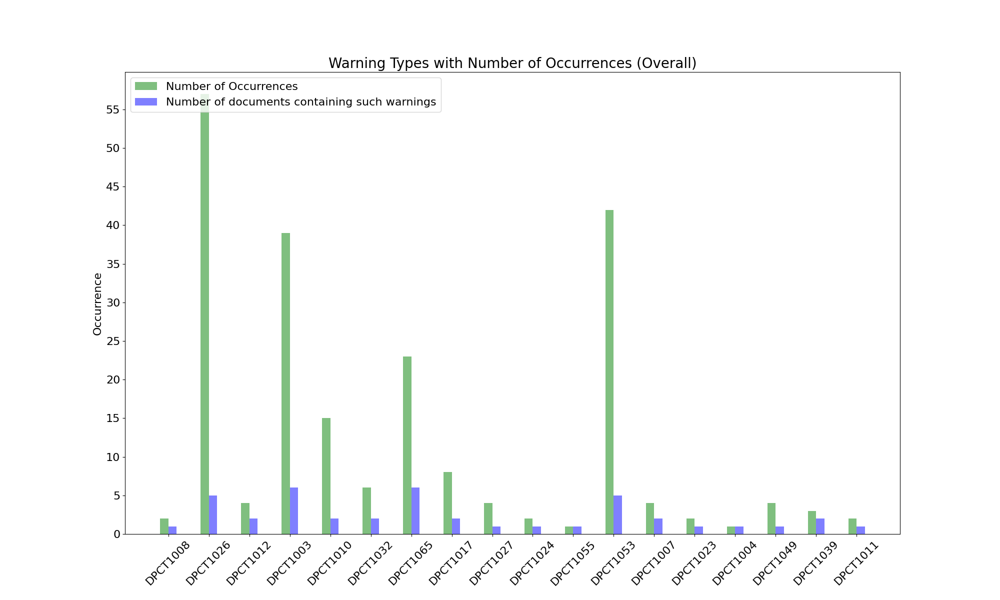

1. Number of Files Containing Warnings: 21
2. Files Containing Warnings:
/src/acc/cuda/cuda_benchmark_utils.dp.cpp ; /src/acc/cuda/cuda_kernels/helper.dp.cpp ; /src/acc/cuda/cuda_kernels/BP.dp.hpp ; /src/acc/cuda/cuda_kernels/diff2.dp.hpp ; /src/acc/cuda/cuda_kernels/wavg.dp.hpp ; /src/acc/cuda/custom_allocator.dp.hpp ; /src/acc/cuda/cuda_autopicker.dp.cpp ; /src/acc/cuda/cuda_ml_optimiser.dp.cpp ; /src/acc/cuda/shortcuts.dp.hpp ; /src/acc/cuda/cuda_utils_cub.dp.hpp ; /src/acc/cuda/cub/util_device.dp.hpp ; /src/acc/cuda/cub/device/dispatch/dispatch_radix_sort.dp.hpp ; /src/acc/cuda/cuda_kernels/helper.dp.hpp ; /src/acc/cuda/cub/util_ptx.dp.hpp ; /src/acc/cuda/cuda_kernels/cuda_device_utils.dp.hpp ; /src/acc/cuda/cub/util_type.dp.hpp ; /src/acc/cuda/cub/warp/specializations/warp_reduce_shfl.dp.hpp ; /src/acc/cuda/cub/warp/specializations/warp_scan_shfl.dp.hpp ; /src/acc/cuda/cub/thread/thread_load.dp.hpp ; /src/acc/cuda/cub/thread/thread_store.dp.hpp ; /src/acc/cuda/cub/agent/single_pass_scan_operators.dp.hpp ;
3. Number of Warning Type: 18
4. Warning Code Type:
DPCT1008 ; DPCT1026 ; DPCT1012 ; DPCT1003 ; DPCT1010 ; DPCT1032 ; DPCT1065 ; DPCT1017 ; DPCT1027 ; DPCT1024 ; DPCT1055 ; DPCT1053 ; DPCT1007 ; DPCT1023 ; DPCT1004 ; DPCT1049 ; DPCT1039 ; DPCT1011 ;
5. Total Number of Warnings: 219
6. Distribution Graph:
8. Detailed Warning Information (Before CTA)
| No. | Warning Code | File Path | Project Name | Line Number | Warning message |
|---|---|---|---|---|---|
| 1 | DPCT1008 | /src/acc/cuda/cuda_benchmark_utils.dp.cpp | test_relion_dpct | 32 | DPCT1008:0: clock function is not defined in the DPC++. This is a hardware-specific feature. Consult with your hardware vendor to find a replacement. |
| 2 | DPCT1008 | /src/acc/cuda/cuda_benchmark_utils.dp.cpp | test_relion_dpct | 56 | DPCT1008:1: clock function is not defined in the DPC++. This is a hardware-specific feature. Consult with your hardware vendor to find a replacement. |
| 3 | DPCT1026 | /src/acc/cuda/cuda_benchmark_utils.dp.cpp | test_relion_dpct | 78 | DPCT1026:2: The call to cudaEventCreate was removed, because this call is redundant in DPC++. |
| 4 | DPCT1026 | /src/acc/cuda/cuda_benchmark_utils.dp.cpp | test_relion_dpct | 82 | DPCT1026:3: The call to cudaEventCreate was removed, because this call is redundant in DPC++. |
| 5 | DPCT1026 | /src/acc/cuda/cuda_benchmark_utils.dp.cpp | test_relion_dpct | 138 | DPCT1026:6: The call to cudaEventDestroy was removed, because this call is redundant in DPC++. |
| 6 | DPCT1026 | /src/acc/cuda/cuda_benchmark_utils.dp.cpp | test_relion_dpct | 142 | DPCT1026:7: The call to cudaEventDestroy was removed, because this call is redundant in DPC++. |
| 7 | DPCT1026 | /src/acc/cuda/cuda_kernels/helper.dp.cpp | test_relion_dpct | 293 | DPCT1026:225: The call to __ldg was removed, because there is no correspoinding API in DPC++. |
| 8 | DPCT1026 | /src/acc/cuda/cuda_kernels/helper.dp.cpp | test_relion_dpct | 360 | DPCT1026:227: The call to __ldg was removed, because there is no correspoinding API in DPC++. |
| 9 | DPCT1026 | /src/acc/cuda/cuda_kernels/helper.dp.cpp | test_relion_dpct | 434 | DPCT1026:228: The call to __ldg was removed, because there is no correspoinding API in DPC++. |
| 10 | DPCT1026 | /src/acc/cuda/cuda_kernels/helper.dp.cpp | test_relion_dpct | 509 | DPCT1026:229: The call to __ldg was removed, because there is no correspoinding API in DPC++. |
| 11 | DPCT1026 | /src/acc/cuda/cuda_kernels/BP.dp.hpp | test_relion_dpct | 88 | DPCT1026:308: The call to __ldg was removed, because there is no correspoinding API in DPC++. |
| 12 | DPCT1026 | /src/acc/cuda/cuda_kernels/BP.dp.hpp | test_relion_dpct | 93 | DPCT1026:309: The call to __ldg was removed, because there is no correspoinding API in DPC++. |
| 13 | DPCT1026 | /src/acc/cuda/cuda_kernels/BP.dp.hpp | test_relion_dpct | 98 | DPCT1026:310: The call to __ldg was removed, because there is no correspoinding API in DPC++. |
| 14 | DPCT1026 | /src/acc/cuda/cuda_kernels/BP.dp.hpp | test_relion_dpct | 103 | DPCT1026:311: The call to __ldg was removed, because there is no correspoinding API in DPC++. |
| 15 | DPCT1026 | /src/acc/cuda/cuda_kernels/BP.dp.hpp | test_relion_dpct | 292 | DPCT1026:313: The call to __ldg was removed, because there is no correspoinding API in DPC++. |
| 16 | DPCT1026 | /src/acc/cuda/cuda_kernels/BP.dp.hpp | test_relion_dpct | 297 | DPCT1026:314: The call to __ldg was removed, because there is no correspoinding API in DPC++. |
| 17 | DPCT1026 | /src/acc/cuda/cuda_kernels/BP.dp.hpp | test_relion_dpct | 302 | DPCT1026:315: The call to __ldg was removed, because there is no correspoinding API in DPC++. |
| 18 | DPCT1026 | /src/acc/cuda/cuda_kernels/BP.dp.hpp | test_relion_dpct | 307 | DPCT1026:316: The call to __ldg was removed, because there is no correspoinding API in DPC++. |
| 19 | DPCT1026 | /src/acc/cuda/cuda_kernels/BP.dp.hpp | test_relion_dpct | 565 | DPCT1026:318: The call to __ldg was removed, because there is no correspoinding API in DPC++. |
| 20 | DPCT1026 | /src/acc/cuda/cuda_kernels/BP.dp.hpp | test_relion_dpct | 570 | DPCT1026:319: The call to __ldg was removed, because there is no correspoinding API in DPC++. |
| 21 | DPCT1026 | /src/acc/cuda/cuda_kernels/BP.dp.hpp | test_relion_dpct | 575 | DPCT1026:320: The call to __ldg was removed, because there is no correspoinding API in DPC++. |
| 22 | DPCT1026 | /src/acc/cuda/cuda_kernels/BP.dp.hpp | test_relion_dpct | 580 | DPCT1026:321: The call to __ldg was removed, because there is no correspoinding API in DPC++. |
| 23 | DPCT1026 | /src/acc/cuda/cuda_kernels/diff2.dp.hpp | test_relion_dpct | 296 | DPCT1026:136: The call to __ldg was removed, because there is no correspoinding API in DPC++. |
| 24 | DPCT1026 | /src/acc/cuda/cuda_kernels/diff2.dp.hpp | test_relion_dpct | 304 | DPCT1026:137: The call to __ldg was removed, because there is no correspoinding API in DPC++. |
| 25 | DPCT1026 | /src/acc/cuda/cuda_kernels/diff2.dp.hpp | test_relion_dpct | 312 | DPCT1026:138: The call to __ldg was removed, because there is no correspoinding API in DPC++. |
| 26 | DPCT1026 | /src/acc/cuda/cuda_kernels/diff2.dp.hpp | test_relion_dpct | 324 | DPCT1026:139: The call to __ldg was removed, because there is no correspoinding API in DPC++. |
| 27 | DPCT1026 | /src/acc/cuda/cuda_kernels/diff2.dp.hpp | test_relion_dpct | 331 | DPCT1026:140: The call to __ldg was removed, because there is no correspoinding API in DPC++. |
| 28 | DPCT1026 | /src/acc/cuda/cuda_kernels/diff2.dp.hpp | test_relion_dpct | 338 | DPCT1026:141: The call to __ldg was removed, because there is no correspoinding API in DPC++. |
| 29 | DPCT1026 | /src/acc/cuda/cuda_kernels/diff2.dp.hpp | test_relion_dpct | 349 | DPCT1026:142: The call to __ldg was removed, because there is no correspoinding API in DPC++. |
| 30 | DPCT1026 | /src/acc/cuda/cuda_kernels/diff2.dp.hpp | test_relion_dpct | 356 | DPCT1026:143: The call to __ldg was removed, because there is no correspoinding API in DPC++. |
| 31 | DPCT1026 | /src/acc/cuda/cuda_kernels/diff2.dp.hpp | test_relion_dpct | 376 | DPCT1026:144: The call to __ldg was removed, because there is no correspoinding API in DPC++. |
| 32 | DPCT1026 | /src/acc/cuda/cuda_kernels/diff2.dp.hpp | test_relion_dpct | 459 | DPCT1026:147: The call to __ldg was removed, because there is no correspoinding API in DPC++. |
| 33 | DPCT1026 | /src/acc/cuda/cuda_kernels/diff2.dp.hpp | test_relion_dpct | 464 | DPCT1026:148: The call to __ldg was removed, because there is no correspoinding API in DPC++. |
| 34 | DPCT1026 | /src/acc/cuda/cuda_kernels/diff2.dp.hpp | test_relion_dpct | 469 | DPCT1026:149: The call to __ldg was removed, because there is no correspoinding API in DPC++. |
| 35 | DPCT1026 | /src/acc/cuda/cuda_kernels/diff2.dp.hpp | test_relion_dpct | 474 | DPCT1026:150: The call to __ldg was removed, because there is no correspoinding API in DPC++. |
| 36 | DPCT1026 | /src/acc/cuda/cuda_kernels/diff2.dp.hpp | test_relion_dpct | 479 | DPCT1026:151: The call to __ldg was removed, because there is no correspoinding API in DPC++. |
| 37 | DPCT1026 | /src/acc/cuda/cuda_kernels/diff2.dp.hpp | test_relion_dpct | 484 | DPCT1026:152: The call to __ldg was removed, because there is no correspoinding API in DPC++. |
| 38 | DPCT1026 | /src/acc/cuda/cuda_kernels/diff2.dp.hpp | test_relion_dpct | 489 | DPCT1026:153: The call to __ldg was removed, because there is no correspoinding API in DPC++. |
| 39 | DPCT1026 | /src/acc/cuda/cuda_kernels/diff2.dp.hpp | test_relion_dpct | 494 | DPCT1026:154: The call to __ldg was removed, because there is no correspoinding API in DPC++. |
| 40 | DPCT1026 | /src/acc/cuda/cuda_kernels/diff2.dp.hpp | test_relion_dpct | 499 | DPCT1026:155: The call to __ldg was removed, because there is no correspoinding API in DPC++. |
| 41 | DPCT1026 | /src/acc/cuda/cuda_kernels/diff2.dp.hpp | test_relion_dpct | 568 | DPCT1026:157: The call to __ldg was removed, because there is no correspoinding API in DPC++. |
| 42 | DPCT1026 | /src/acc/cuda/cuda_kernels/diff2.dp.hpp | test_relion_dpct | 573 | DPCT1026:158: The call to __ldg was removed, because there is no correspoinding API in DPC++. |
| 43 | DPCT1026 | /src/acc/cuda/cuda_kernels/diff2.dp.hpp | test_relion_dpct | 707 | DPCT1026:162: The call to __ldg was removed, because there is no correspoinding API in DPC++. |
| 44 | DPCT1026 | /src/acc/cuda/cuda_kernels/diff2.dp.hpp | test_relion_dpct | 715 | DPCT1026:163: The call to __ldg was removed, because there is no correspoinding API in DPC++. |
| 45 | DPCT1026 | /src/acc/cuda/cuda_kernels/diff2.dp.hpp | test_relion_dpct | 723 | DPCT1026:164: The call to __ldg was removed, because there is no correspoinding API in DPC++. |
| 46 | DPCT1026 | /src/acc/cuda/cuda_kernels/diff2.dp.hpp | test_relion_dpct | 735 | DPCT1026:165: The call to __ldg was removed, because there is no correspoinding API in DPC++. |
| 47 | DPCT1026 | /src/acc/cuda/cuda_kernels/diff2.dp.hpp | test_relion_dpct | 742 | DPCT1026:166: The call to __ldg was removed, because there is no correspoinding API in DPC++. |
| 48 | DPCT1026 | /src/acc/cuda/cuda_kernels/diff2.dp.hpp | test_relion_dpct | 749 | DPCT1026:167: The call to __ldg was removed, because there is no correspoinding API in DPC++. |
| 49 | DPCT1026 | /src/acc/cuda/cuda_kernels/diff2.dp.hpp | test_relion_dpct | 760 | DPCT1026:168: The call to __ldg was removed, because there is no correspoinding API in DPC++. |
| 50 | DPCT1026 | /src/acc/cuda/cuda_kernels/diff2.dp.hpp | test_relion_dpct | 767 | DPCT1026:169: The call to __ldg was removed, because there is no correspoinding API in DPC++. |
| 51 | DPCT1026 | /src/acc/cuda/cuda_kernels/diff2.dp.hpp | test_relion_dpct | 785 | DPCT1026:170: The call to __ldg was removed, because there is no correspoinding API in DPC++. |
| 52 | DPCT1026 | /src/acc/cuda/cuda_kernels/diff2.dp.hpp | test_relion_dpct | 793 | DPCT1026:171: The call to __ldg was removed, because there is no correspoinding API in DPC++. |
| 53 | DPCT1026 | /src/acc/cuda/cuda_kernels/wavg.dp.hpp | test_relion_dpct | 123 | DPCT1026:126: The call to __ldg was removed, because there is no correspoinding API in DPC++. |
| 54 | DPCT1026 | /src/acc/cuda/cuda_kernels/wavg.dp.hpp | test_relion_dpct | 128 | DPCT1026:127: The call to __ldg was removed, because there is no correspoinding API in DPC++. |
| 55 | DPCT1026 | /src/acc/cuda/cuda_kernels/wavg.dp.hpp | test_relion_dpct | 136 | DPCT1026:128: The call to __ldg was removed, because there is no correspoinding API in DPC++. |
| 56 | DPCT1026 | /src/acc/cuda/cuda_kernels/wavg.dp.hpp | test_relion_dpct | 141 | DPCT1026:129: The call to __ldg was removed, because there is no correspoinding API in DPC++. |
| 57 | DPCT1026 | /src/acc/cuda/cuda_kernels/wavg.dp.hpp | test_relion_dpct | 154 | DPCT1026:130: The call to __ldg was removed, because there is no correspoinding API in DPC++. |
| 58 | DPCT1026 | /src/acc/cuda/cuda_kernels/wavg.dp.hpp | test_relion_dpct | 159 | DPCT1026:131: The call to __ldg was removed, because there is no correspoinding API in DPC++. |
| 59 | DPCT1026 | /src/acc/cuda/cuda_kernels/wavg.dp.hpp | test_relion_dpct | 167 | DPCT1026:132: The call to __ldg was removed, because there is no correspoinding API in DPC++. |
| 60 | DPCT1012 | /src/acc/cuda/cuda_benchmark_utils.dp.cpp | test_relion_dpct | 86 | DPCT1012:4: Detected kernel execution time measurement pattern and generated an initial code for time measurements in SYCL. You can change the way time is measured depending on your goals. |
| 61 | DPCT1012 | /src/acc/cuda/cuda_benchmark_utils.dp.cpp | test_relion_dpct | 115 | DPCT1012:5: Detected kernel execution time measurement pattern and generated an initial code for time measurements in SYCL. You can change the way time is measured depending on your goals. |
| 62 | DPCT1012 | /src/acc/cuda/custom_allocator.dp.hpp | test_relion_dpct | 123 | DPCT1012:16: Detected kernel execution time measurement pattern and generated an initial code for time measurements in SYCL. You can change the way time is measured depending on your goals. |
| 63 | DPCT1012 | /src/acc/cuda/custom_allocator.dp.hpp | test_relion_dpct | 133 | DPCT1012:198: Detected kernel execution time measurement pattern and generated an initial code for time measurements in SYCL. You can change the way time is measured depending on your goals. |
| 64 | DPCT1003 | /src/acc/cuda/cuda_autopicker.dp.cpp | test_relion_dpct | 59 | DPCT1003:289: Migrated API does not return error code. (*, 0) is inserted. You may need to rewrite this code. |
| 65 | DPCT1003 | /src/acc/cuda/cuda_autopicker.dp.cpp | test_relion_dpct | 71 | DPCT1003:290: Migrated API does not return error code. (*, 0) is inserted. You may need to rewrite this code. |
| 66 | DPCT1003 | /src/acc/cuda/cuda_autopicker.dp.cpp | test_relion_dpct | 99 | DPCT1003:291: Migrated API does not return error code. (*, 0) is inserted. You may need to rewrite this code. |
| 67 | DPCT1003 | /src/acc/cuda/cuda_autopicker.dp.cpp | test_relion_dpct | 111 | DPCT1003:292: Migrated API does not return error code. (*, 0) is inserted. You may need to rewrite this code. |
| 68 | DPCT1003 | /src/acc/cuda/cuda_autopicker.dp.cpp | test_relion_dpct | 414 | DPCT1003:298: Migrated API does not return error code. (*, 0) is inserted. You may need to rewrite this code. |
| 69 | DPCT1003 | /src/acc/cuda/cuda_autopicker.dp.cpp | test_relion_dpct | 1121 | DPCT1003:304: Migrated API does not return error code. (*, 0) is inserted. You may need to rewrite this code. |
| 70 | DPCT1003 | /src/acc/cuda/cuda_autopicker.dp.cpp | test_relion_dpct | 1142 | DPCT1003:305: Migrated API does not return error code. (*, 0) is inserted. You may need to rewrite this code. |
| 71 | DPCT1003 | /src/acc/cuda/cuda_ml_optimiser.dp.cpp | test_relion_dpct | 73 | DPCT1003:280: Migrated API does not return error code. (*, 0) is inserted. You may need to rewrite this code. |
| 72 | DPCT1003 | /src/acc/cuda/cuda_ml_optimiser.dp.cpp | test_relion_dpct | 96 | DPCT1003:281: Migrated API does not return error code. (*, 0) is inserted. You may need to rewrite this code. |
| 73 | DPCT1003 | /src/acc/cuda/cuda_ml_optimiser.dp.cpp | test_relion_dpct | 107 | DPCT1003:282: Migrated API does not return error code. (*, 0) is inserted. You may need to rewrite this code. |
| 74 | DPCT1003 | /src/acc/cuda/cuda_ml_optimiser.dp.cpp | test_relion_dpct | 171 | DPCT1003:283: Migrated API does not return error code. (*, 0) is inserted. You may need to rewrite this code. |
| 75 | DPCT1003 | /src/acc/cuda/cuda_ml_optimiser.dp.cpp | test_relion_dpct | 182 | DPCT1003:284: Migrated API does not return error code. (*, 0) is inserted. You may need to rewrite this code. |
| 76 | DPCT1003 | /src/acc/cuda/cuda_ml_optimiser.dp.cpp | test_relion_dpct | 252 | DPCT1003:285: Migrated API does not return error code. (*, 0) is inserted. You may need to rewrite this code. |
| 77 | DPCT1003 | /src/acc/cuda/cuda_ml_optimiser.dp.cpp | test_relion_dpct | 263 | DPCT1003:286: Migrated API does not return error code. (*, 0) is inserted. You may need to rewrite this code. |
| 78 | DPCT1003 | /src/acc/cuda/cuda_ml_optimiser.dp.cpp | test_relion_dpct | 289 | DPCT1003:287: Migrated API does not return error code. (*, 0) is inserted. You may need to rewrite this code. |
| 79 | DPCT1003 | /src/acc/cuda/cuda_ml_optimiser.dp.cpp | test_relion_dpct | 300 | DPCT1003:288: Migrated API does not return error code. (*, 0) is inserted. You may need to rewrite this code. |
| 80 | DPCT1003 | /src/acc/cuda/shortcuts.dp.hpp | test_relion_dpct | 28 | DPCT1003:29: Migrated API does not return error code. (*, 0) is inserted. You may need to rewrite this code. |
| 81 | DPCT1003 | /src/acc/cuda/shortcuts.dp.hpp | test_relion_dpct | 32 | DPCT1003:209: Migrated API does not return error code. (*, 0) is inserted. You may need to rewrite this code. |
| 82 | DPCT1003 | /src/acc/cuda/shortcuts.dp.hpp | test_relion_dpct | 46 | DPCT1003:30: Migrated API does not return error code. (*, 0) is inserted. You may need to rewrite this code. |
| 83 | DPCT1003 | /src/acc/cuda/shortcuts.dp.hpp | test_relion_dpct | 50 | DPCT1003:210: Migrated API does not return error code. (*, 0) is inserted. You may need to rewrite this code. |
| 84 | DPCT1003 | /src/acc/cuda/shortcuts.dp.hpp | test_relion_dpct | 61 | DPCT1003:31: Migrated API does not return error code. (*, 0) is inserted. You may need to rewrite this code. |
| 85 | DPCT1003 | /src/acc/cuda/shortcuts.dp.hpp | test_relion_dpct | 65 | DPCT1003:211: Migrated API does not return error code. (*, 0) is inserted. You may need to rewrite this code. |
| 86 | DPCT1003 | /src/acc/cuda/shortcuts.dp.hpp | test_relion_dpct | 79 | DPCT1003:32: Migrated API does not return error code. (*, 0) is inserted. You may need to rewrite this code. |
| 87 | DPCT1003 | /src/acc/cuda/shortcuts.dp.hpp | test_relion_dpct | 83 | DPCT1003:212: Migrated API does not return error code. (*, 0) is inserted. You may need to rewrite this code. |
| 88 | DPCT1003 | /src/acc/cuda/shortcuts.dp.hpp | test_relion_dpct | 94 | DPCT1003:33: Migrated API does not return error code. (*, 0) is inserted. You may need to rewrite this code. |
| 89 | DPCT1003 | /src/acc/cuda/shortcuts.dp.hpp | test_relion_dpct | 98 | DPCT1003:213: Migrated API does not return error code. (*, 0) is inserted. You may need to rewrite this code. |
| 90 | DPCT1003 | /src/acc/cuda/shortcuts.dp.hpp | test_relion_dpct | 109 | DPCT1003:34: Migrated API does not return error code. (*, 0) is inserted. You may need to rewrite this code. |
| 91 | DPCT1003 | /src/acc/cuda/shortcuts.dp.hpp | test_relion_dpct | 113 | DPCT1003:214: Migrated API does not return error code. (*, 0) is inserted. You may need to rewrite this code. |
| 92 | DPCT1003 | /src/acc/cuda/shortcuts.dp.hpp | test_relion_dpct | 126 | DPCT1003:35: Migrated API does not return error code. (*, 0) is inserted. You may need to rewrite this code. |
| 93 | DPCT1003 | /src/acc/cuda/shortcuts.dp.hpp | test_relion_dpct | 130 | DPCT1003:215: Migrated API does not return error code. (*, 0) is inserted. You may need to rewrite this code. |
| 94 | DPCT1003 | /src/acc/cuda/custom_allocator.dp.hpp | test_relion_dpct | 183 | DPCT1003:358: Migrated API does not return error code. (*, 0) is inserted. You may need to rewrite this code. |
| 95 | DPCT1003 | /src/acc/cuda/custom_allocator.dp.hpp | test_relion_dpct | 462 | DPCT1003:18: Migrated API does not return error code. (*, 0) is inserted. You may need to rewrite this code. |
| 96 | DPCT1003 | /src/acc/cuda/custom_allocator.dp.hpp | test_relion_dpct | 466 | DPCT1003:200: Migrated API does not return error code. (*, 0) is inserted. You may need to rewrite this code. |
| 97 | DPCT1003 | /src/acc/cuda/custom_allocator.dp.hpp | test_relion_dpct | 495 | DPCT1003:19: Migrated API does not return error code. (*, 0) is inserted. You may need to rewrite this code. |
| 98 | DPCT1003 | /src/acc/cuda/custom_allocator.dp.hpp | test_relion_dpct | 513 | DPCT1003:20: Migrated API does not return error code. (*, 0) is inserted. You may need to rewrite this code. |
| 99 | DPCT1003 | /src/acc/cuda/custom_allocator.dp.hpp | test_relion_dpct | 517 | DPCT1003:201: Migrated API does not return error code. (*, 0) is inserted. You may need to rewrite this code. |
| 100 | DPCT1003 | /src/acc/cuda/custom_allocator.dp.hpp | test_relion_dpct | 658 | DPCT1003:21: Migrated API does not return error code. (*, 0) is inserted. You may need to rewrite this code. |
| 101 | DPCT1003 | /src/acc/cuda/cuda_utils_cub.dp.hpp | test_relion_dpct | 320 | DPCT1003:109: Migrated API does not return error code. (*, 0) is inserted. You may need to rewrite this code. |
| 102 | DPCT1003 | /src/acc/cuda/cub/util_device.dp.hpp | test_relion_dpct | 213 | DPCT1003:91: Migrated API does not return error code. (*, 0) is inserted. You may need to rewrite this code. |
| 103 | DPCT1010 | /src/acc/cuda/cuda_autopicker.dp.cpp | test_relion_dpct | 224 | DPCT1010:293: SYCL uses exceptions to report errors and does not use the error codes. The call was replaced with 0. You need to rewrite this code. |
| 104 | DPCT1010 | /src/acc/cuda/cuda_autopicker.dp.cpp | test_relion_dpct | 249 | DPCT1010:294: SYCL uses exceptions to report errors and does not use the error codes. The call was replaced with 0. You need to rewrite this code. |
| 105 | DPCT1010 | /src/acc/cuda/cuda_autopicker.dp.cpp | test_relion_dpct | 261 | DPCT1010:295: SYCL uses exceptions to report errors and does not use the error codes. The call was replaced with 0. You need to rewrite this code. |
| 106 | DPCT1010 | /src/acc/cuda/cuda_autopicker.dp.cpp | test_relion_dpct | 296 | DPCT1010:296: SYCL uses exceptions to report errors and does not use the error codes. The call was replaced with 0. You need to rewrite this code. |
| 107 | DPCT1010 | /src/acc/cuda/cuda_autopicker.dp.cpp | test_relion_dpct | 334 | DPCT1010:297: SYCL uses exceptions to report errors and does not use the error codes. The call was replaced with 0. You need to rewrite this code. |
| 108 | DPCT1010 | /src/acc/cuda/cuda_autopicker.dp.cpp | test_relion_dpct | 628 | DPCT1010:299: SYCL uses exceptions to report errors and does not use the error codes. The call was replaced with 0. You need to rewrite this code. |
| 109 | DPCT1010 | /src/acc/cuda/cuda_autopicker.dp.cpp | test_relion_dpct | 642 | DPCT1010:300: SYCL uses exceptions to report errors and does not use the error codes. The call was replaced with 0. You need to rewrite this code. |
| 110 | DPCT1010 | /src/acc/cuda/cuda_autopicker.dp.cpp | test_relion_dpct | 920 | DPCT1010:301: SYCL uses exceptions to report errors and does not use the error codes. The call was replaced with 0. You need to rewrite this code. |
| 111 | DPCT1010 | /src/acc/cuda/cuda_autopicker.dp.cpp | test_relion_dpct | 1080 | DPCT1010:302: SYCL uses exceptions to report errors and does not use the error codes. The call was replaced with 0. You need to rewrite this code. |
| 112 | DPCT1010 | /src/acc/cuda/cuda_autopicker.dp.cpp | test_relion_dpct | 1112 | DPCT1010:303: SYCL uses exceptions to report errors and does not use the error codes. The call was replaced with 0. You need to rewrite this code. |
| 113 | DPCT1010 | /src/acc/cuda/cuda_autopicker.dp.cpp | test_relion_dpct | 1200 | DPCT1010:306: SYCL uses exceptions to report errors and does not use the error codes. The call was replaced with 0. You need to rewrite this code. |
| 114 | DPCT1010 | /src/acc/cuda/cub/device/dispatch/dispatch_radix_sort.dp.hpp | test_relion_dpct | 1034 | DPCT1010:104: SYCL uses exceptions to report errors and does not use the error codes. The call was replaced with 0. You need to rewrite this code. |
| 115 | DPCT1010 | /src/acc/cuda/cub/device/dispatch/dispatch_radix_sort.dp.hpp | test_relion_dpct | 1068 | DPCT1010:105: SYCL uses exceptions to report errors and does not use the error codes. The call was replaced with 0. You need to rewrite this code. |
| 116 | DPCT1010 | /src/acc/cuda/cub/device/dispatch/dispatch_radix_sort.dp.hpp | test_relion_dpct | 1115 | DPCT1010:106: SYCL uses exceptions to report errors and does not use the error codes. The call was replaced with 0. You need to rewrite this code. |
| 117 | DPCT1010 | /src/acc/cuda/cub/device/dispatch/dispatch_radix_sort.dp.hpp | test_relion_dpct | 1583 | DPCT1010:108: SYCL uses exceptions to report errors and does not use the error codes. The call was replaced with 0. You need to rewrite this code. |
| 118 | DPCT1032 | /src/acc/cuda/cuda_kernels/helper.dp.cpp | test_relion_dpct | 84 | DPCT1032:221: Different generator is used, you may need to adjust the code. |
| 119 | DPCT1032 | /src/acc/cuda/cuda_kernels/helper.dp.cpp | test_relion_dpct | 103 | DPCT1032:222: Different generator is used, you may need to adjust the code. |
| 120 | DPCT1032 | /src/acc/cuda/cuda_kernels/helper.dp.cpp | test_relion_dpct | 155 | DPCT1032:223: Different generator is used, you may need to adjust the code. |
| 121 | DPCT1032 | /src/acc/cuda/cuda_kernels/helper.dp.hpp | test_relion_dpct | 199 | DPCT1032:118: Different generator is used, you may need to adjust the code. |
| 122 | DPCT1032 | /src/acc/cuda/cuda_kernels/helper.dp.hpp | test_relion_dpct | 207 | DPCT1032:119: Different generator is used, you may need to adjust the code. |
| 123 | DPCT1032 | /src/acc/cuda/cuda_kernels/helper.dp.hpp | test_relion_dpct | 215 | DPCT1032:120: Different generator is used, you may need to adjust the code. |
| 124 | DPCT1065 | /src/acc/cuda/cuda_kernels/helper.dp.cpp | test_relion_dpct | 330 | DPCT1065:224: Consider replacing sycl::nd_item::barrier() with sycl::nd_item::barrier(sycl::access::fence_space::local_space) for better performance, if there is no access to global memory. |
| 125 | DPCT1065 | /src/acc/cuda/cuda_kernels/helper.dp.cpp | test_relion_dpct | 343 | DPCT1065:226: Consider replacing sycl::nd_item::barrier() with sycl::nd_item::barrier(sycl::access::fence_space::local_space) for better performance, if there is no access to global memory. |
| 126 | DPCT1065 | /src/acc/cuda/cub/util_ptx.dp.hpp | test_relion_dpct | 272 | DPCT1065:56: Consider replacing sycl::nd_item::barrier() with sycl::nd_item::barrier(sycl::access::fence_space::local_space) for better performance, if there is no access to global memory. |
| 127 | DPCT1065 | /src/acc/cuda/cub/util_ptx.dp.hpp | test_relion_dpct | 286 | DPCT1065:57: Consider replacing sycl::nd_item::barrier() with sycl::nd_item::barrier(sycl::access::fence_space::local_space) for better performance, if there is no access to global memory. |
| 128 | DPCT1065 | /src/acc/cuda/cuda_kernels/BP.dp.hpp | test_relion_dpct | 63 | DPCT1065:307: Consider replacing sycl::nd_item::barrier() with sycl::nd_item::barrier(sycl::access::fence_space::local_space) for better performance, if there is no access to global memory. |
| 129 | DPCT1065 | /src/acc/cuda/cuda_kernels/BP.dp.hpp | test_relion_dpct | 240 | DPCT1065:312: Consider replacing sycl::nd_item::barrier() with sycl::nd_item::barrier(sycl::access::fence_space::local_space) for better performance, if there is no access to global memory. |
| 130 | DPCT1065 | /src/acc/cuda/cuda_kernels/BP.dp.hpp | test_relion_dpct | 495 | DPCT1065:317: Consider replacing sycl::nd_item::barrier() with sycl::nd_item::barrier(sycl::access::fence_space::local_space) for better performance, if there is no access to global memory. |
| 131 | DPCT1065 | /src/acc/cuda/cuda_kernels/diff2.dp.hpp | test_relion_dpct | 69 | DPCT1065:133: Consider replacing sycl::nd_item::barrier() with sycl::nd_item::barrier(sycl::access::fence_space::local_space) for better performance, if there is no access to global memory. |
| 132 | DPCT1065 | /src/acc/cuda/cuda_kernels/diff2.dp.hpp | test_relion_dpct | 145 | DPCT1065:134: Consider replacing sycl::nd_item::barrier() with sycl::nd_item::barrier(sycl::access::fence_space::local_space) for better performance, if there is no access to global memory. |
| 133 | DPCT1065 | /src/acc/cuda/cuda_kernels/diff2.dp.hpp | test_relion_dpct | 386 | DPCT1065:135: Consider replacing sycl::nd_item::barrier() with sycl::nd_item::barrier(sycl::access::fence_space::local_space) for better performance, if there is no access to global memory. |
| 134 | DPCT1065 | /src/acc/cuda/cuda_kernels/diff2.dp.hpp | test_relion_dpct | 402 | DPCT1065:145: Consider replacing sycl::nd_item::barrier() with sycl::nd_item::barrier(sycl::access::fence_space::local_space) for better performance, if there is no access to global memory. |
| 135 | DPCT1065 | /src/acc/cuda/cuda_kernels/diff2.dp.hpp | test_relion_dpct | 505 | DPCT1065:146: Consider replacing sycl::nd_item::barrier() with sycl::nd_item::barrier(sycl::access::fence_space::local_space) for better performance, if there is no access to global memory. |
| 136 | DPCT1065 | /src/acc/cuda/cuda_kernels/diff2.dp.hpp | test_relion_dpct | 579 | DPCT1065:156: Consider replacing sycl::nd_item::barrier() with sycl::nd_item::barrier(sycl::access::fence_space::local_space) for better performance, if there is no access to global memory. |
| 137 | DPCT1065 | /src/acc/cuda/cuda_kernels/diff2.dp.hpp | test_relion_dpct | 595 | DPCT1065:159: Consider replacing sycl::nd_item::barrier() with sycl::nd_item::barrier(sycl::access::fence_space::local_space) for better performance, if there is no access to global memory. |
| 138 | DPCT1065 | /src/acc/cuda/cuda_kernels/diff2.dp.hpp | test_relion_dpct | 658 | DPCT1065:160: Consider replacing sycl::nd_item::barrier() with sycl::nd_item::barrier(sycl::access::fence_space::local_space) for better performance, if there is no access to global memory. |
| 139 | DPCT1065 | /src/acc/cuda/cuda_kernels/diff2.dp.hpp | test_relion_dpct | 803 | DPCT1065:161: Consider replacing sycl::nd_item::barrier() with sycl::nd_item::barrier(sycl::access::fence_space::local_space) for better performance, if there is no access to global memory. |
| 140 | DPCT1065 | /src/acc/cuda/cuda_kernels/diff2.dp.hpp | test_relion_dpct | 820 | DPCT1065:172: Consider replacing sycl::nd_item::barrier() with sycl::nd_item::barrier(sycl::access::fence_space::local_space) for better performance, if there is no access to global memory. |
| 141 | DPCT1065 | /src/acc/cuda/cuda_kernels/wavg.dp.hpp | test_relion_dpct | 53 | DPCT1065:125: Consider replacing sycl::nd_item::barrier() with sycl::nd_item::barrier(sycl::access::fence_space::local_space) for better performance, if there is no access to global memory. |
| 142 | DPCT1065 | /src/acc/cuda/cuda_kernels/helper.dp.hpp | test_relion_dpct | 128 | DPCT1065:115: Consider replacing sycl::nd_item::barrier() with sycl::nd_item::barrier(sycl::access::fence_space::local_space) for better performance, if there is no access to global memory. |
| 143 | DPCT1065 | /src/acc/cuda/cuda_kernels/helper.dp.hpp | test_relion_dpct | 156 | DPCT1065:116: Consider replacing sycl::nd_item::barrier() with sycl::nd_item::barrier(sycl::access::fence_space::local_space) for better performance, if there is no access to global memory. |
| 144 | DPCT1065 | /src/acc/cuda/cuda_kernels/helper.dp.hpp | test_relion_dpct | 174 | DPCT1065:117: Consider replacing sycl::nd_item::barrier() with sycl::nd_item::barrier(sycl::access::fence_space::local_space) for better performance, if there is no access to global memory. |
| 145 | DPCT1065 | /src/acc/cuda/cuda_kernels/helper.dp.hpp | test_relion_dpct | 684 | DPCT1065:121: Consider replacing sycl::nd_item::barrier() with sycl::nd_item::barrier(sycl::access::fence_space::local_space) for better performance, if there is no access to global memory. |
| 146 | DPCT1065 | /src/acc/cuda/cuda_kernels/helper.dp.hpp | test_relion_dpct | 694 | DPCT1065:122: Consider replacing sycl::nd_item::barrier() with sycl::nd_item::barrier(sycl::access::fence_space::local_space) for better performance, if there is no access to global memory. |
| 147 | DPCT1017 | /src/acc/cuda/cuda_kernels/helper.dp.cpp | test_relion_dpct | 630 | DPCT1017:230: The sycl::sincos call is used instead of the sincos call. These two calls do not provide exactly the same functionality. Check the potential precision and/or performance issues for the generated code. |
| 148 | DPCT1017 | /src/acc/cuda/cuda_kernels/helper.dp.cpp | test_relion_dpct | 675 | DPCT1017:231: The sycl::sincos call is used instead of the sincos call. These two calls do not provide exactly the same functionality. Check the potential precision and/or performance issues for the generated code. |
| 149 | DPCT1017 | /src/acc/cuda/cuda_kernels/helper.dp.cpp | test_relion_dpct | 869 | DPCT1017:217: The sycl::sincos call is used instead of the sincosf call. These two calls do not provide exactly the same functionality. Check the potential precision and/or performance issues for the generated code. |
| 150 | DPCT1017 | /src/acc/cuda/cuda_kernels/helper.dp.cpp | test_relion_dpct | 933 | DPCT1017:218: The sycl::sincos call is used instead of the sincosf call. These two calls do not provide exactly the same functionality. Check the potential precision and/or performance issues for the generated code. |
| 151 | DPCT1017 | /src/acc/cuda/cuda_kernels/helper.dp.cpp | test_relion_dpct | 941 | DPCT1017:219: The sycl::sincos call is used instead of the sincosf call. These two calls do not provide exactly the same functionality. Check the potential precision and/or performance issues for the generated code. |
| 152 | DPCT1017 | /src/acc/cuda/cuda_kernels/helper.dp.cpp | test_relion_dpct | 949 | DPCT1017:220: The sycl::sincos call is used instead of the sincosf call. These two calls do not provide exactly the same functionality. Check the potential precision and/or performance issues for the generated code. |
| 153 | DPCT1017 | /src/acc/cuda/cuda_kernels/cuda_device_utils.dp.hpp | test_relion_dpct | 126 | DPCT1017:111: The sycl::sincos call is used instead of the sincosf call. These two calls do not provide exactly the same functionality. Check the potential precision and/or performance issues for the generated code. |
| 154 | DPCT1017 | /src/acc/cuda/cuda_kernels/cuda_device_utils.dp.hpp | test_relion_dpct | 149 | DPCT1017:112: The sycl::sincos call is used instead of the sincosf call. These two calls do not provide exactly the same functionality. Check the potential precision and/or performance issues for the generated code. |
| 155 | DPCT1027 | /src/acc/cuda/custom_allocator.dp.hpp | test_relion_dpct | 88 | DPCT1027:14: The call to cudaEventDestroy was replaced with 0, because this call is redundant in DPC++. |
| 156 | DPCT1027 | /src/acc/cuda/custom_allocator.dp.hpp | test_relion_dpct | 92 | DPCT1027:196: The call to cudaEventDestroy was replaced with 0, because this call is redundant in DPC++. |
| 157 | DPCT1027 | /src/acc/cuda/custom_allocator.dp.hpp | test_relion_dpct | 114 | DPCT1027:15: The call to cudaEventCreate was replaced with 0, because this call is redundant in DPC++. |
| 158 | DPCT1027 | /src/acc/cuda/custom_allocator.dp.hpp | test_relion_dpct | 118 | DPCT1027:197: The call to cudaEventCreate was replaced with 0, because this call is redundant in DPC++. |
| 159 | DPCT1024 | /src/acc/cuda/custom_allocator.dp.hpp | test_relion_dpct | 128 | DPCT1024:17: The original code returned the error code that was further consumed by the program logic. This original code was replaced with 0. You may need to rewrite the program logic consuming the error code. |
| 160 | DPCT1024 | /src/acc/cuda/custom_allocator.dp.hpp | test_relion_dpct | 138 | DPCT1024:199: The original code returned the error code that was further consumed by the program logic. This original code was replaced with 0. You may need to rewrite the program logic consuming the error code. |
| 161 | DPCT1055 | /src/acc/cuda/cub/util_type.dp.hpp | test_relion_dpct | 517 | DPCT1055:48: Vector types with size 1 are migrated to the corresponding fundamental types, which cannot be inherited. You need to rewrite the code. |
| 162 | DPCT1053 | /src/acc/cuda/cub/util_ptx.dp.hpp | test_relion_dpct | 94 | DPCT1053:49: Migration of device assembly code is not supported. |
| 163 | DPCT1053 | /src/acc/cuda/cub/util_ptx.dp.hpp | test_relion_dpct | 115 | DPCT1053:50: Migration of device assembly code is not supported. |
| 164 | DPCT1053 | /src/acc/cuda/cub/util_ptx.dp.hpp | test_relion_dpct | 139 | DPCT1053:51: Migration of device assembly code is not supported. |
| 165 | DPCT1053 | /src/acc/cuda/cub/util_ptx.dp.hpp | test_relion_dpct | 185 | DPCT1053:52: Migration of device assembly code is not supported. |
| 166 | DPCT1053 | /src/acc/cuda/cub/util_ptx.dp.hpp | test_relion_dpct | 207 | DPCT1053:53: Migration of device assembly code is not supported. |
| 167 | DPCT1053 | /src/acc/cuda/cub/util_ptx.dp.hpp | test_relion_dpct | 247 | DPCT1053:54: Migration of device assembly code is not supported. |
| 168 | DPCT1053 | /src/acc/cuda/cub/util_ptx.dp.hpp | test_relion_dpct | 261 | DPCT1053:55: Migration of device assembly code is not supported. |
| 169 | DPCT1053 | /src/acc/cuda/cub/util_ptx.dp.hpp | test_relion_dpct | 370 | DPCT1053:62: Migration of device assembly code is not supported. |
| 170 | DPCT1053 | /src/acc/cuda/cub/util_ptx.dp.hpp | test_relion_dpct | 392 | DPCT1053:63: Migration of device assembly code is not supported. |
| 171 | DPCT1053 | /src/acc/cuda/cub/util_ptx.dp.hpp | test_relion_dpct | 414 | DPCT1053:64: Migration of device assembly code is not supported. |
| 172 | DPCT1053 | /src/acc/cuda/cub/util_ptx.dp.hpp | test_relion_dpct | 433 | DPCT1053:65: Migration of device assembly code is not supported. |
| 173 | DPCT1053 | /src/acc/cuda/cub/util_ptx.dp.hpp | test_relion_dpct | 447 | DPCT1053:66: Migration of device assembly code is not supported. |
| 174 | DPCT1053 | /src/acc/cuda/cub/util_ptx.dp.hpp | test_relion_dpct | 460 | DPCT1053:67: Migration of device assembly code is not supported. |
| 175 | DPCT1053 | /src/acc/cuda/cub/util_ptx.dp.hpp | test_relion_dpct | 471 | DPCT1053:68: Migration of device assembly code is not supported. |
| 176 | DPCT1053 | /src/acc/cuda/cub/util_ptx.dp.hpp | test_relion_dpct | 498 | DPCT1053:69: Migration of device assembly code is not supported. |
| 177 | DPCT1053 | /src/acc/cuda/cub/util_ptx.dp.hpp | test_relion_dpct | 512 | DPCT1053:70: Migration of device assembly code is not supported. |
| 178 | DPCT1053 | /src/acc/cuda/cub/util_ptx.dp.hpp | test_relion_dpct | 525 | DPCT1053:71: Migration of device assembly code is not supported. |
| 179 | DPCT1053 | /src/acc/cuda/cub/util_ptx.dp.hpp | test_relion_dpct | 538 | DPCT1053:72: Migration of device assembly code is not supported. |
| 180 | DPCT1053 | /src/acc/cuda/cub/util_ptx.dp.hpp | test_relion_dpct | 551 | DPCT1053:73: Migration of device assembly code is not supported. |
| 181 | DPCT1053 | /src/acc/cuda/cub/util_ptx.dp.hpp | test_relion_dpct | 564 | DPCT1053:74: Migration of device assembly code is not supported. |
| 182 | DPCT1053 | /src/acc/cuda/cub/util_ptx.dp.hpp | test_relion_dpct | 777 | DPCT1053:75: Migration of device assembly code is not supported. |
| 183 | DPCT1053 | /src/acc/cuda/cub/warp/specializations/warp_reduce_shfl.dp.hpp | test_relion_dpct | 151 | DPCT1053:81: Migration of device assembly code is not supported. |
| 184 | DPCT1053 | /src/acc/cuda/cub/warp/specializations/warp_reduce_shfl.dp.hpp | test_relion_dpct | 191 | DPCT1053:82: Migration of device assembly code is not supported. |
| 185 | DPCT1053 | /src/acc/cuda/cub/warp/specializations/warp_reduce_shfl.dp.hpp | test_relion_dpct | 230 | DPCT1053:83: Migration of device assembly code is not supported. |
| 186 | DPCT1053 | /src/acc/cuda/cub/warp/specializations/warp_reduce_shfl.dp.hpp | test_relion_dpct | 276 | DPCT1053:84: Migration of device assembly code is not supported. |
| 187 | DPCT1053 | /src/acc/cuda/cub/warp/specializations/warp_reduce_shfl.dp.hpp | test_relion_dpct | 322 | DPCT1053:85: Migration of device assembly code is not supported. |
| 188 | DPCT1053 | /src/acc/cuda/cub/warp/specializations/warp_scan_shfl.dp.hpp | test_relion_dpct | 125 | DPCT1053:92: Migration of device assembly code is not supported. |
| 189 | DPCT1053 | /src/acc/cuda/cub/warp/specializations/warp_scan_shfl.dp.hpp | test_relion_dpct | 165 | DPCT1053:93: Migration of device assembly code is not supported. |
| 190 | DPCT1053 | /src/acc/cuda/cub/warp/specializations/warp_scan_shfl.dp.hpp | test_relion_dpct | 206 | DPCT1053:94: Migration of device assembly code is not supported. |
| 191 | DPCT1053 | /src/acc/cuda/cub/warp/specializations/warp_scan_shfl.dp.hpp | test_relion_dpct | 247 | DPCT1053:95: Migration of device assembly code is not supported. |
| 192 | DPCT1053 | /src/acc/cuda/cub/warp/specializations/warp_scan_shfl.dp.hpp | test_relion_dpct | 298 | DPCT1053:96: Migration of device assembly code is not supported. |
| 193 | DPCT1053 | /src/acc/cuda/cub/warp/specializations/warp_scan_shfl.dp.hpp | test_relion_dpct | 349 | DPCT1053:97: Migration of device assembly code is not supported. |
| 194 | DPCT1053 | /src/acc/cuda/cub/thread/thread_load.dp.hpp | test_relion_dpct | 155 | DPCT1053:76: Migration of device assembly code is not supported. |
| 195 | DPCT1053 | /src/acc/cuda/cub/thread/thread_load.dp.hpp | test_relion_dpct | 185 | DPCT1053:77: Migration of device assembly code is not supported. |
| 196 | DPCT1053 | /src/acc/cuda/cub/thread/thread_load.dp.hpp | test_relion_dpct | 225 | DPCT1053:78: Migration of device assembly code is not supported. |
| 197 | DPCT1053 | /src/acc/cuda/cub/thread/thread_load.dp.hpp | test_relion_dpct | 243 | DPCT1053:79: Migration of device assembly code is not supported. |
| 198 | DPCT1053 | /src/acc/cuda/cub/thread/thread_load.dp.hpp | test_relion_dpct | 262 | DPCT1053:80: Migration of device assembly code is not supported. |
| 199 | DPCT1053 | /src/acc/cuda/cub/thread/thread_store.dp.hpp | test_relion_dpct | 157 | DPCT1053:86: Migration of device assembly code is not supported. |
| 200 | DPCT1053 | /src/acc/cuda/cub/thread/thread_store.dp.hpp | test_relion_dpct | 184 | DPCT1053:87: Migration of device assembly code is not supported. |
| 201 | DPCT1053 | /src/acc/cuda/cub/thread/thread_store.dp.hpp | test_relion_dpct | 220 | DPCT1053:88: Migration of device assembly code is not supported. |
| 202 | DPCT1053 | /src/acc/cuda/cub/thread/thread_store.dp.hpp | test_relion_dpct | 237 | DPCT1053:89: Migration of device assembly code is not supported. |
| 203 | DPCT1053 | /src/acc/cuda/cub/thread/thread_store.dp.hpp | test_relion_dpct | 254 | DPCT1053:90: Migration of device assembly code is not supported. |
| 204 | DPCT1007 | /src/acc/cuda/cub/util_ptx.dp.hpp | test_relion_dpct | 301 | DPCT1007:58: Migration of this CUDA API is not supported by the Intel(R) DPC++ Compatibility Tool. |
| 205 | DPCT1007 | /src/acc/cuda/cub/agent/single_pass_scan_operators.dp.hpp | test_relion_dpct | 392 | DPCT1007:98: Migration of this CUDA API is not supported by the Intel(R) DPC++ Compatibility Tool. |
| 206 | DPCT1007 | /src/acc/cuda/cub/agent/single_pass_scan_operators.dp.hpp | test_relion_dpct | 412 | DPCT1007:99: Migration of this CUDA API is not supported by the Intel(R) DPC++ Compatibility Tool. |
| 207 | DPCT1007 | /src/acc/cuda/cub/agent/single_pass_scan_operators.dp.hpp | test_relion_dpct | 430 | DPCT1007:100: Migration of this CUDA API is not supported by the Intel(R) DPC++ Compatibility Tool. |
| 208 | DPCT1023 | /src/acc/cuda/cub/util_ptx.dp.hpp | test_relion_dpct | 317 | DPCT1023:59: The DPC++ sub-group does not support mask options for sycl::ONEAPI::any_of. |
| 209 | DPCT1023 | /src/acc/cuda/cub/util_ptx.dp.hpp | test_relion_dpct | 335 | DPCT1023:60: The DPC++ sub-group does not support mask options for sycl::ONEAPI::all_of. |
| 210 | DPCT1004 | /src/acc/cuda/cub/util_ptx.dp.hpp | test_relion_dpct | 353 | DPCT1004:61: Could not generate replacement. |
| 211 | DPCT1049 | /src/acc/cuda/cub/device/dispatch/dispatch_radix_sort.dp.hpp | test_relion_dpct | 1003 | DPCT1049:101: The workgroup size passed to the SYCL kernel may exceed the limit. To get the device limit, query info::device::max_work_group_size. Adjust the workgroup size if needed. |
| 212 | DPCT1049 | /src/acc/cuda/cub/device/dispatch/dispatch_radix_sort.dp.hpp | test_relion_dpct | 1048 | DPCT1049:102: The workgroup size passed to the SYCL kernel may exceed the limit. To get the device limit, query info::device::max_work_group_size. Adjust the workgroup size if needed. |
| 213 | DPCT1049 | /src/acc/cuda/cub/device/dispatch/dispatch_radix_sort.dp.hpp | test_relion_dpct | 1083 | DPCT1049:103: The workgroup size passed to the SYCL kernel may exceed the limit. To get the device limit, query info::device::max_work_group_size. Adjust the workgroup size if needed. |
| 214 | DPCT1049 | /src/acc/cuda/cub/device/dispatch/dispatch_radix_sort.dp.hpp | test_relion_dpct | 1550 | DPCT1049:107: The workgroup size passed to the SYCL kernel may exceed the limit. To get the device limit, query info::device::max_work_group_size. Adjust the workgroup size if needed. |
| 215 | DPCT1039 | /src/acc/cuda/cuda_kernels/helper.dp.hpp | test_relion_dpct | 1079 | DPCT1039:123: The generated code assumes that "dpower_spectrum+ires" points to the global memory address space. If it points to a local memory address space, replace "dpct::atomic_fetch_add" with "dpct::atomic_fetch_add<double, sycl::access::address_space::local_space>". |
| 216 | DPCT1039 | /src/acc/cuda/cuda_kernels/helper.dp.hpp | test_relion_dpct | 1089 | DPCT1039:124: The generated code assumes that "dcounter+ires" points to the global memory address space. If it points to a local memory address space, replace "dpct::atomic_fetch_add" with "dpct::atomic_fetch_add<double, sycl::access::address_space::local_space>". |
| 217 | DPCT1039 | /src/acc/cuda/cuda_kernels/cuda_device_utils.dp.hpp | test_relion_dpct | 25 | DPCT1039:110: The generated code assumes that "address" points to the global memory address space. If it points to a local memory address space, replace "dpct::atomic_fetch_add" with "dpct::atomic_fetch_add<float, sycl::access::address_space::local_space>". |
| 218 | DPCT1011 | /src/acc/cuda/cuda_kernels/cuda_device_utils.dp.hpp | test_relion_dpct | 164 | DPCT1011:113: The tool detected overloaded operators for built-in vector types, which may conflict with the SYCL 1.2.1 standard operators (see 4.10.2.1 Vec interface). The tool inserted a namespace to avoid the conflict. Use SYCL 1.2.1 standard operators instead. |
| 219 | DPCT1011 | /src/acc/cuda/cuda_kernels/cuda_device_utils.dp.hpp | test_relion_dpct | 179 | DPCT1011:114: The tool detected overloaded operators for built-in vector types, which may conflict with the SYCL 1.2.1 standard operators (see 4.10.2.1 Vec interface). The tool inserted a namespace to avoid the conflict. Use SYCL 1.2.1 standard operators instead. |
9. Detailed Warning Information (After CTA)
| No. | Warning Code | File Path | Project Name | Line Number | Warning message |
|---|---|---|---|---|---|
| 1 | DPCT1026 | /src/acc/cuda/cuda_benchmark_utils.dp.cpp | relion_cta | 76 | DPCT1026:2: The call to cudaEventCreate was removed, because this call is redundant in DPC++. |
| 2 | DPCT1026 | /src/acc/cuda/cuda_benchmark_utils.dp.cpp | relion_cta | 80 | DPCT1026:3: The call to cudaEventCreate was removed, because this call is redundant in DPC++. |
| 3 | DPCT1026 | /src/acc/cuda/cuda_benchmark_utils.dp.cpp | relion_cta | 136 | DPCT1026:6: The call to cudaEventDestroy was removed, because this call is redundant in DPC++. |
| 4 | DPCT1026 | /src/acc/cuda/cuda_benchmark_utils.dp.cpp | relion_cta | 140 | DPCT1026:7: The call to cudaEventDestroy was removed, because this call is redundant in DPC++. |
| 5 | DPCT1026 | /src/acc/cuda/cuda_kernels/helper.dp.cpp | relion_cta | 293 | DPCT1026:225: The call to __ldg was removed, because there is no correspoinding API in DPC++. |
| 6 | DPCT1026 | /src/acc/cuda/cuda_kernels/helper.dp.cpp | relion_cta | 364 | DPCT1026:227: The call to __ldg was removed, because there is no correspoinding API in DPC++. |
| 7 | DPCT1026 | /src/acc/cuda/cuda_kernels/helper.dp.cpp | relion_cta | 438 | DPCT1026:228: The call to __ldg was removed, because there is no correspoinding API in DPC++. |
| 8 | DPCT1026 | /src/acc/cuda/cuda_kernels/helper.dp.cpp | relion_cta | 513 | DPCT1026:229: The call to __ldg was removed, because there is no correspoinding API in DPC++. |
| 9 | DPCT1026 | /src/acc/cuda/cuda_kernels/BP.dp.hpp | relion_cta | 90 | DPCT1026:308: The call to __ldg was removed, because there is no correspoinding API in DPC++. |
| 10 | DPCT1026 | /src/acc/cuda/cuda_kernels/BP.dp.hpp | relion_cta | 95 | DPCT1026:309: The call to __ldg was removed, because there is no correspoinding API in DPC++. |
| 11 | DPCT1026 | /src/acc/cuda/cuda_kernels/BP.dp.hpp | relion_cta | 100 | DPCT1026:310: The call to __ldg was removed, because there is no correspoinding API in DPC++. |
| 12 | DPCT1026 | /src/acc/cuda/cuda_kernels/BP.dp.hpp | relion_cta | 105 | DPCT1026:311: The call to __ldg was removed, because there is no correspoinding API in DPC++. |
| 13 | DPCT1026 | /src/acc/cuda/cuda_kernels/BP.dp.hpp | relion_cta | 296 | DPCT1026:313: The call to __ldg was removed, because there is no correspoinding API in DPC++. |
| 14 | DPCT1026 | /src/acc/cuda/cuda_kernels/BP.dp.hpp | relion_cta | 301 | DPCT1026:314: The call to __ldg was removed, because there is no correspoinding API in DPC++. |
| 15 | DPCT1026 | /src/acc/cuda/cuda_kernels/BP.dp.hpp | relion_cta | 306 | DPCT1026:315: The call to __ldg was removed, because there is no correspoinding API in DPC++. |
| 16 | DPCT1026 | /src/acc/cuda/cuda_kernels/BP.dp.hpp | relion_cta | 311 | DPCT1026:316: The call to __ldg was removed, because there is no correspoinding API in DPC++. |
| 17 | DPCT1026 | /src/acc/cuda/cuda_kernels/BP.dp.hpp | relion_cta | 571 | DPCT1026:318: The call to __ldg was removed, because there is no correspoinding API in DPC++. |
| 18 | DPCT1026 | /src/acc/cuda/cuda_kernels/BP.dp.hpp | relion_cta | 576 | DPCT1026:319: The call to __ldg was removed, because there is no correspoinding API in DPC++. |
| 19 | DPCT1026 | /src/acc/cuda/cuda_kernels/BP.dp.hpp | relion_cta | 581 | DPCT1026:320: The call to __ldg was removed, because there is no correspoinding API in DPC++. |
| 20 | DPCT1026 | /src/acc/cuda/cuda_kernels/BP.dp.hpp | relion_cta | 586 | DPCT1026:321: The call to __ldg was removed, because there is no correspoinding API in DPC++. |
| 21 | DPCT1026 | /src/acc/cuda/cuda_kernels/diff2.dp.hpp | relion_cta | 300 | DPCT1026:136: The call to __ldg was removed, because there is no correspoinding API in DPC++. |
| 22 | DPCT1026 | /src/acc/cuda/cuda_kernels/diff2.dp.hpp | relion_cta | 308 | DPCT1026:137: The call to __ldg was removed, because there is no correspoinding API in DPC++. |
| 23 | DPCT1026 | /src/acc/cuda/cuda_kernels/diff2.dp.hpp | relion_cta | 316 | DPCT1026:138: The call to __ldg was removed, because there is no correspoinding API in DPC++. |
| 24 | DPCT1026 | /src/acc/cuda/cuda_kernels/diff2.dp.hpp | relion_cta | 328 | DPCT1026:139: The call to __ldg was removed, because there is no correspoinding API in DPC++. |
| 25 | DPCT1026 | /src/acc/cuda/cuda_kernels/diff2.dp.hpp | relion_cta | 335 | DPCT1026:140: The call to __ldg was removed, because there is no correspoinding API in DPC++. |
| 26 | DPCT1026 | /src/acc/cuda/cuda_kernels/diff2.dp.hpp | relion_cta | 342 | DPCT1026:141: The call to __ldg was removed, because there is no correspoinding API in DPC++. |
| 27 | DPCT1026 | /src/acc/cuda/cuda_kernels/diff2.dp.hpp | relion_cta | 353 | DPCT1026:142: The call to __ldg was removed, because there is no correspoinding API in DPC++. |
| 28 | DPCT1026 | /src/acc/cuda/cuda_kernels/diff2.dp.hpp | relion_cta | 360 | DPCT1026:143: The call to __ldg was removed, because there is no correspoinding API in DPC++. |
| 29 | DPCT1026 | /src/acc/cuda/cuda_kernels/diff2.dp.hpp | relion_cta | 380 | DPCT1026:144: The call to __ldg was removed, because there is no correspoinding API in DPC++. |
| 30 | DPCT1026 | /src/acc/cuda/cuda_kernels/diff2.dp.hpp | relion_cta | 467 | DPCT1026:147: The call to __ldg was removed, because there is no correspoinding API in DPC++. |
| 31 | DPCT1026 | /src/acc/cuda/cuda_kernels/diff2.dp.hpp | relion_cta | 472 | DPCT1026:148: The call to __ldg was removed, because there is no correspoinding API in DPC++. |
| 32 | DPCT1026 | /src/acc/cuda/cuda_kernels/diff2.dp.hpp | relion_cta | 477 | DPCT1026:149: The call to __ldg was removed, because there is no correspoinding API in DPC++. |
| 33 | DPCT1026 | /src/acc/cuda/cuda_kernels/diff2.dp.hpp | relion_cta | 482 | DPCT1026:150: The call to __ldg was removed, because there is no correspoinding API in DPC++. |
| 34 | DPCT1026 | /src/acc/cuda/cuda_kernels/diff2.dp.hpp | relion_cta | 487 | DPCT1026:151: The call to __ldg was removed, because there is no correspoinding API in DPC++. |
| 35 | DPCT1026 | /src/acc/cuda/cuda_kernels/diff2.dp.hpp | relion_cta | 492 | DPCT1026:152: The call to __ldg was removed, because there is no correspoinding API in DPC++. |
| 36 | DPCT1026 | /src/acc/cuda/cuda_kernels/diff2.dp.hpp | relion_cta | 497 | DPCT1026:153: The call to __ldg was removed, because there is no correspoinding API in DPC++. |
| 37 | DPCT1026 | /src/acc/cuda/cuda_kernels/diff2.dp.hpp | relion_cta | 502 | DPCT1026:154: The call to __ldg was removed, because there is no correspoinding API in DPC++. |
| 38 | DPCT1026 | /src/acc/cuda/cuda_kernels/diff2.dp.hpp | relion_cta | 507 | DPCT1026:155: The call to __ldg was removed, because there is no correspoinding API in DPC++. |
| 39 | DPCT1026 | /src/acc/cuda/cuda_kernels/diff2.dp.hpp | relion_cta | 578 | DPCT1026:157: The call to __ldg was removed, because there is no correspoinding API in DPC++. |
| 40 | DPCT1026 | /src/acc/cuda/cuda_kernels/diff2.dp.hpp | relion_cta | 583 | DPCT1026:158: The call to __ldg was removed, because there is no correspoinding API in DPC++. |
| 41 | DPCT1026 | /src/acc/cuda/cuda_kernels/diff2.dp.hpp | relion_cta | 723 | DPCT1026:162: The call to __ldg was removed, because there is no correspoinding API in DPC++. |
| 42 | DPCT1026 | /src/acc/cuda/cuda_kernels/diff2.dp.hpp | relion_cta | 731 | DPCT1026:163: The call to __ldg was removed, because there is no correspoinding API in DPC++. |
| 43 | DPCT1026 | /src/acc/cuda/cuda_kernels/diff2.dp.hpp | relion_cta | 739 | DPCT1026:164: The call to __ldg was removed, because there is no correspoinding API in DPC++. |
| 44 | DPCT1026 | /src/acc/cuda/cuda_kernels/diff2.dp.hpp | relion_cta | 751 | DPCT1026:165: The call to __ldg was removed, because there is no correspoinding API in DPC++. |
| 45 | DPCT1026 | /src/acc/cuda/cuda_kernels/diff2.dp.hpp | relion_cta | 758 | DPCT1026:166: The call to __ldg was removed, because there is no correspoinding API in DPC++. |
| 46 | DPCT1026 | /src/acc/cuda/cuda_kernels/diff2.dp.hpp | relion_cta | 765 | DPCT1026:167: The call to __ldg was removed, because there is no correspoinding API in DPC++. |
| 47 | DPCT1026 | /src/acc/cuda/cuda_kernels/diff2.dp.hpp | relion_cta | 776 | DPCT1026:168: The call to __ldg was removed, because there is no correspoinding API in DPC++. |
| 48 | DPCT1026 | /src/acc/cuda/cuda_kernels/diff2.dp.hpp | relion_cta | 783 | DPCT1026:169: The call to __ldg was removed, because there is no correspoinding API in DPC++. |
| 49 | DPCT1026 | /src/acc/cuda/cuda_kernels/diff2.dp.hpp | relion_cta | 801 | DPCT1026:170: The call to __ldg was removed, because there is no correspoinding API in DPC++. |
| 50 | DPCT1026 | /src/acc/cuda/cuda_kernels/diff2.dp.hpp | relion_cta | 809 | DPCT1026:171: The call to __ldg was removed, because there is no correspoinding API in DPC++. |
| 51 | DPCT1026 | /src/acc/cuda/cuda_kernels/wavg.dp.hpp | relion_cta | 125 | DPCT1026:126: The call to __ldg was removed, because there is no correspoinding API in DPC++. |
| 52 | DPCT1026 | /src/acc/cuda/cuda_kernels/wavg.dp.hpp | relion_cta | 130 | DPCT1026:127: The call to __ldg was removed, because there is no correspoinding API in DPC++. |
| 53 | DPCT1026 | /src/acc/cuda/cuda_kernels/wavg.dp.hpp | relion_cta | 138 | DPCT1026:128: The call to __ldg was removed, because there is no correspoinding API in DPC++. |
| 54 | DPCT1026 | /src/acc/cuda/cuda_kernels/wavg.dp.hpp | relion_cta | 143 | DPCT1026:129: The call to __ldg was removed, because there is no correspoinding API in DPC++. |
| 55 | DPCT1026 | /src/acc/cuda/cuda_kernels/wavg.dp.hpp | relion_cta | 156 | DPCT1026:130: The call to __ldg was removed, because there is no correspoinding API in DPC++. |
| 56 | DPCT1026 | /src/acc/cuda/cuda_kernels/wavg.dp.hpp | relion_cta | 161 | DPCT1026:131: The call to __ldg was removed, because there is no correspoinding API in DPC++. |
| 57 | DPCT1026 | /src/acc/cuda/cuda_kernels/wavg.dp.hpp | relion_cta | 169 | DPCT1026:132: The call to __ldg was removed, because there is no correspoinding API in DPC++. |
| 58 | DPCT1012 | /src/acc/cuda/cuda_benchmark_utils.dp.cpp | relion_cta | 84 | DPCT1012:4: Detected kernel execution time measurement pattern and generated an initial code for time measurements in SYCL. You can change the way time is measured depending on your goals. |
| 59 | DPCT1012 | /src/acc/cuda/cuda_benchmark_utils.dp.cpp | relion_cta | 113 | DPCT1012:5: Detected kernel execution time measurement pattern and generated an initial code for time measurements in SYCL. You can change the way time is measured depending on your goals. |
| 60 | DPCT1012 | /src/acc/cuda/custom_allocator.dp.hpp | relion_cta | 123 | DPCT1012:16: Detected kernel execution time measurement pattern and generated an initial code for time measurements in SYCL. You can change the way time is measured depending on your goals. |
| 61 | DPCT1012 | /src/acc/cuda/custom_allocator.dp.hpp | relion_cta | 133 | DPCT1012:198: Detected kernel execution time measurement pattern and generated an initial code for time measurements in SYCL. You can change the way time is measured depending on your goals. |
| 62 | DPCT1010 | /src/acc/cuda/cuda_autopicker.dp.cpp | relion_cta | 208 | DPCT1010:293: SYCL uses exceptions to report errors and does not use the error codes. The call was replaced with 0. You need to rewrite this code. |
| 63 | DPCT1010 | /src/acc/cuda/cuda_autopicker.dp.cpp | relion_cta | 233 | DPCT1010:294: SYCL uses exceptions to report errors and does not use the error codes. The call was replaced with 0. You need to rewrite this code. |
| 64 | DPCT1010 | /src/acc/cuda/cuda_autopicker.dp.cpp | relion_cta | 245 | DPCT1010:295: SYCL uses exceptions to report errors and does not use the error codes. The call was replaced with 0. You need to rewrite this code. |
| 65 | DPCT1010 | /src/acc/cuda/cuda_autopicker.dp.cpp | relion_cta | 280 | DPCT1010:296: SYCL uses exceptions to report errors and does not use the error codes. The call was replaced with 0. You need to rewrite this code. |
| 66 | DPCT1010 | /src/acc/cuda/cuda_autopicker.dp.cpp | relion_cta | 318 | DPCT1010:297: SYCL uses exceptions to report errors and does not use the error codes. The call was replaced with 0. You need to rewrite this code. |
| 67 | DPCT1010 | /src/acc/cuda/cuda_autopicker.dp.cpp | relion_cta | 608 | DPCT1010:299: SYCL uses exceptions to report errors and does not use the error codes. The call was replaced with 0. You need to rewrite this code. |
| 68 | DPCT1010 | /src/acc/cuda/cuda_autopicker.dp.cpp | relion_cta | 622 | DPCT1010:300: SYCL uses exceptions to report errors and does not use the error codes. The call was replaced with 0. You need to rewrite this code. |
| 69 | DPCT1010 | /src/acc/cuda/cuda_autopicker.dp.cpp | relion_cta | 900 | DPCT1010:301: SYCL uses exceptions to report errors and does not use the error codes. The call was replaced with 0. You need to rewrite this code. |
| 70 | DPCT1010 | /src/acc/cuda/cuda_autopicker.dp.cpp | relion_cta | 1060 | DPCT1010:302: SYCL uses exceptions to report errors and does not use the error codes. The call was replaced with 0. You need to rewrite this code. |
| 71 | DPCT1010 | /src/acc/cuda/cuda_autopicker.dp.cpp | relion_cta | 1092 | DPCT1010:303: SYCL uses exceptions to report errors and does not use the error codes. The call was replaced with 0. You need to rewrite this code. |
| 72 | DPCT1010 | /src/acc/cuda/cuda_autopicker.dp.cpp | relion_cta | 1172 | DPCT1010:306: SYCL uses exceptions to report errors and does not use the error codes. The call was replaced with 0. You need to rewrite this code. |
| 73 | DPCT1010 | /src/acc/cuda/cub/device/dispatch/dispatch_radix_sort.dp.hpp | relion_cta | 1026 | DPCT1010:104: SYCL uses exceptions to report errors and does not use the error codes. The call was replaced with 0. You need to rewrite this code. |
| 74 | DPCT1010 | /src/acc/cuda/cub/device/dispatch/dispatch_radix_sort.dp.hpp | relion_cta | 1057 | DPCT1010:105: SYCL uses exceptions to report errors and does not use the error codes. The call was replaced with 0. You need to rewrite this code. |
| 75 | DPCT1010 | /src/acc/cuda/cub/device/dispatch/dispatch_radix_sort.dp.hpp | relion_cta | 1096 | DPCT1010:106: SYCL uses exceptions to report errors and does not use the error codes. The call was replaced with 0. You need to rewrite this code. |
| 76 | DPCT1010 | /src/acc/cuda/cub/device/dispatch/dispatch_radix_sort.dp.hpp | relion_cta | 1558 | DPCT1010:108: SYCL uses exceptions to report errors and does not use the error codes. The call was replaced with 0. You need to rewrite this code. |
| 77 | DPCT1017 | /src/acc/cuda/cuda_kernels/helper.dp.cpp | relion_cta | 634 | DPCT1017:230: The sycl::sincos call is used instead of the sincos call. These two calls do not provide exactly the same functionality. Check the potential precision and/or performance issues for the generated code. |
| 78 | DPCT1017 | /src/acc/cuda/cuda_kernels/helper.dp.cpp | relion_cta | 679 | DPCT1017:231: The sycl::sincos call is used instead of the sincos call. These two calls do not provide exactly the same functionality. Check the potential precision and/or performance issues for the generated code. |
| 79 | DPCT1017 | /src/acc/cuda/cuda_kernels/helper.dp.cpp | relion_cta | 873 | DPCT1017:217: The sycl::sincos call is used instead of the sincosf call. These two calls do not provide exactly the same functionality. Check the potential precision and/or performance issues for the generated code. |
| 80 | DPCT1017 | /src/acc/cuda/cuda_kernels/helper.dp.cpp | relion_cta | 937 | DPCT1017:218: The sycl::sincos call is used instead of the sincosf call. These two calls do not provide exactly the same functionality. Check the potential precision and/or performance issues for the generated code. |
| 81 | DPCT1017 | /src/acc/cuda/cuda_kernels/helper.dp.cpp | relion_cta | 945 | DPCT1017:219: The sycl::sincos call is used instead of the sincosf call. These two calls do not provide exactly the same functionality. Check the potential precision and/or performance issues for the generated code. |
| 82 | DPCT1017 | /src/acc/cuda/cuda_kernels/helper.dp.cpp | relion_cta | 953 | DPCT1017:220: The sycl::sincos call is used instead of the sincosf call. These two calls do not provide exactly the same functionality. Check the potential precision and/or performance issues for the generated code. |
| 83 | DPCT1017 | /src/acc/cuda/cuda_kernels/cuda_device_utils.dp.hpp | relion_cta | 125 | DPCT1017:111: The sycl::sincos call is used instead of the sincosf call. These two calls do not provide exactly the same functionality. Check the potential precision and/or performance issues for the generated code. |
| 84 | DPCT1017 | /src/acc/cuda/cuda_kernels/cuda_device_utils.dp.hpp | relion_cta | 148 | DPCT1017:112: The sycl::sincos call is used instead of the sincosf call. These two calls do not provide exactly the same functionality. Check the potential precision and/or performance issues for the generated code. |
| 85 | DPCT1027 | /src/acc/cuda/custom_allocator.dp.hpp | relion_cta | 88 | DPCT1027:14: The call to cudaEventDestroy was replaced with 0, because this call is redundant in DPC++. |
| 86 | DPCT1027 | /src/acc/cuda/custom_allocator.dp.hpp | relion_cta | 92 | DPCT1027:196: The call to cudaEventDestroy was replaced with 0, because this call is redundant in DPC++. |
| 87 | DPCT1027 | /src/acc/cuda/custom_allocator.dp.hpp | relion_cta | 114 | DPCT1027:15: The call to cudaEventCreate was replaced with 0, because this call is redundant in DPC++. |
| 88 | DPCT1027 | /src/acc/cuda/custom_allocator.dp.hpp | relion_cta | 118 | DPCT1027:197: The call to cudaEventCreate was replaced with 0, because this call is redundant in DPC++. |
| 89 | DPCT1024 | /src/acc/cuda/custom_allocator.dp.hpp | relion_cta | 128 | DPCT1024:17: The original code returned the error code that was further consumed by the program logic. This original code was replaced with 0. You may need to rewrite the program logic consuming the error code. |
| 90 | DPCT1024 | /src/acc/cuda/custom_allocator.dp.hpp | relion_cta | 138 | DPCT1024:199: The original code returned the error code that was further consumed by the program logic. This original code was replaced with 0. You may need to rewrite the program logic consuming the error code. |
| 91 | DPCT1055 | /src/acc/cuda/cub/util_type.dp.hpp | relion_cta | 517 | DPCT1055:48: Vector types with size 1 are migrated to the corresponding fundamental types, which cannot be inherited. You need to rewrite the code. |
| 92 | DPCT1053 | /src/acc/cuda/cub/util_ptx.dp.hpp | relion_cta | 94 | DPCT1053:49: Migration of device assembly code is not supported. |
| 93 | DPCT1053 | /src/acc/cuda/cub/util_ptx.dp.hpp | relion_cta | 115 | DPCT1053:50: Migration of device assembly code is not supported. |
| 94 | DPCT1053 | /src/acc/cuda/cub/util_ptx.dp.hpp | relion_cta | 139 | DPCT1053:51: Migration of device assembly code is not supported. |
| 95 | DPCT1053 | /src/acc/cuda/cub/util_ptx.dp.hpp | relion_cta | 185 | DPCT1053:52: Migration of device assembly code is not supported. |
| 96 | DPCT1053 | /src/acc/cuda/cub/util_ptx.dp.hpp | relion_cta | 207 | DPCT1053:53: Migration of device assembly code is not supported. |
| 97 | DPCT1053 | /src/acc/cuda/cub/util_ptx.dp.hpp | relion_cta | 247 | DPCT1053:54: Migration of device assembly code is not supported. |
| 98 | DPCT1053 | /src/acc/cuda/cub/util_ptx.dp.hpp | relion_cta | 261 | DPCT1053:55: Migration of device assembly code is not supported. |
| 99 | DPCT1053 | /src/acc/cuda/cub/util_ptx.dp.hpp | relion_cta | 374 | DPCT1053:62: Migration of device assembly code is not supported. |
| 100 | DPCT1053 | /src/acc/cuda/cub/util_ptx.dp.hpp | relion_cta | 396 | DPCT1053:63: Migration of device assembly code is not supported. |
| 101 | DPCT1053 | /src/acc/cuda/cub/util_ptx.dp.hpp | relion_cta | 418 | DPCT1053:64: Migration of device assembly code is not supported. |
| 102 | DPCT1053 | /src/acc/cuda/cub/util_ptx.dp.hpp | relion_cta | 437 | DPCT1053:65: Migration of device assembly code is not supported. |
| 103 | DPCT1053 | /src/acc/cuda/cub/util_ptx.dp.hpp | relion_cta | 451 | DPCT1053:66: Migration of device assembly code is not supported. |
| 104 | DPCT1053 | /src/acc/cuda/cub/util_ptx.dp.hpp | relion_cta | 464 | DPCT1053:67: Migration of device assembly code is not supported. |
| 105 | DPCT1053 | /src/acc/cuda/cub/util_ptx.dp.hpp | relion_cta | 475 | DPCT1053:68: Migration of device assembly code is not supported. |
| 106 | DPCT1053 | /src/acc/cuda/cub/util_ptx.dp.hpp | relion_cta | 502 | DPCT1053:69: Migration of device assembly code is not supported. |
| 107 | DPCT1053 | /src/acc/cuda/cub/util_ptx.dp.hpp | relion_cta | 516 | DPCT1053:70: Migration of device assembly code is not supported. |
| 108 | DPCT1053 | /src/acc/cuda/cub/util_ptx.dp.hpp | relion_cta | 529 | DPCT1053:71: Migration of device assembly code is not supported. |
| 109 | DPCT1053 | /src/acc/cuda/cub/util_ptx.dp.hpp | relion_cta | 542 | DPCT1053:72: Migration of device assembly code is not supported. |
| 110 | DPCT1053 | /src/acc/cuda/cub/util_ptx.dp.hpp | relion_cta | 555 | DPCT1053:73: Migration of device assembly code is not supported. |
| 111 | DPCT1053 | /src/acc/cuda/cub/util_ptx.dp.hpp | relion_cta | 568 | DPCT1053:74: Migration of device assembly code is not supported. |
| 112 | DPCT1053 | /src/acc/cuda/cub/util_ptx.dp.hpp | relion_cta | 781 | DPCT1053:75: Migration of device assembly code is not supported. |
| 113 | DPCT1053 | /src/acc/cuda/cub/warp/specializations/warp_reduce_shfl.dp.hpp | relion_cta | 151 | DPCT1053:81: Migration of device assembly code is not supported. |
| 114 | DPCT1053 | /src/acc/cuda/cub/warp/specializations/warp_reduce_shfl.dp.hpp | relion_cta | 191 | DPCT1053:82: Migration of device assembly code is not supported. |
| 115 | DPCT1053 | /src/acc/cuda/cub/warp/specializations/warp_reduce_shfl.dp.hpp | relion_cta | 230 | DPCT1053:83: Migration of device assembly code is not supported. |
| 116 | DPCT1053 | /src/acc/cuda/cub/warp/specializations/warp_reduce_shfl.dp.hpp | relion_cta | 276 | DPCT1053:84: Migration of device assembly code is not supported. |
| 117 | DPCT1053 | /src/acc/cuda/cub/warp/specializations/warp_reduce_shfl.dp.hpp | relion_cta | 322 | DPCT1053:85: Migration of device assembly code is not supported. |
| 118 | DPCT1053 | /src/acc/cuda/cub/warp/specializations/warp_scan_shfl.dp.hpp | relion_cta | 125 | DPCT1053:92: Migration of device assembly code is not supported. |
| 119 | DPCT1053 | /src/acc/cuda/cub/warp/specializations/warp_scan_shfl.dp.hpp | relion_cta | 165 | DPCT1053:93: Migration of device assembly code is not supported. |
| 120 | DPCT1053 | /src/acc/cuda/cub/warp/specializations/warp_scan_shfl.dp.hpp | relion_cta | 206 | DPCT1053:94: Migration of device assembly code is not supported. |
| 121 | DPCT1053 | /src/acc/cuda/cub/warp/specializations/warp_scan_shfl.dp.hpp | relion_cta | 247 | DPCT1053:95: Migration of device assembly code is not supported. |
| 122 | DPCT1053 | /src/acc/cuda/cub/warp/specializations/warp_scan_shfl.dp.hpp | relion_cta | 298 | DPCT1053:96: Migration of device assembly code is not supported. |
| 123 | DPCT1053 | /src/acc/cuda/cub/warp/specializations/warp_scan_shfl.dp.hpp | relion_cta | 349 | DPCT1053:97: Migration of device assembly code is not supported. |
| 124 | DPCT1053 | /src/acc/cuda/cub/thread/thread_load.dp.hpp | relion_cta | 155 | DPCT1053:76: Migration of device assembly code is not supported. |
| 125 | DPCT1053 | /src/acc/cuda/cub/thread/thread_load.dp.hpp | relion_cta | 185 | DPCT1053:77: Migration of device assembly code is not supported. |
| 126 | DPCT1053 | /src/acc/cuda/cub/thread/thread_load.dp.hpp | relion_cta | 225 | DPCT1053:78: Migration of device assembly code is not supported. |
| 127 | DPCT1053 | /src/acc/cuda/cub/thread/thread_load.dp.hpp | relion_cta | 243 | DPCT1053:79: Migration of device assembly code is not supported. |
| 128 | DPCT1053 | /src/acc/cuda/cub/thread/thread_load.dp.hpp | relion_cta | 262 | DPCT1053:80: Migration of device assembly code is not supported. |
| 129 | DPCT1053 | /src/acc/cuda/cub/thread/thread_store.dp.hpp | relion_cta | 157 | DPCT1053:86: Migration of device assembly code is not supported. |
| 130 | DPCT1053 | /src/acc/cuda/cub/thread/thread_store.dp.hpp | relion_cta | 184 | DPCT1053:87: Migration of device assembly code is not supported. |
| 131 | DPCT1053 | /src/acc/cuda/cub/thread/thread_store.dp.hpp | relion_cta | 220 | DPCT1053:88: Migration of device assembly code is not supported. |
| 132 | DPCT1053 | /src/acc/cuda/cub/thread/thread_store.dp.hpp | relion_cta | 237 | DPCT1053:89: Migration of device assembly code is not supported. |
| 133 | DPCT1053 | /src/acc/cuda/cub/thread/thread_store.dp.hpp | relion_cta | 254 | DPCT1053:90: Migration of device assembly code is not supported. |
| 134 | DPCT1007 | /src/acc/cuda/cub/util_ptx.dp.hpp | relion_cta | 305 | DPCT1007:58: Migration of this CUDA API is not supported by the Intel(R) DPC++ Compatibility Tool. |
| 135 | DPCT1007 | /src/acc/cuda/cub/agent/single_pass_scan_operators.dp.hpp | relion_cta | 392 | DPCT1007:98: Migration of this CUDA API is not supported by the Intel(R) DPC++ Compatibility Tool. |
| 136 | DPCT1007 | /src/acc/cuda/cub/agent/single_pass_scan_operators.dp.hpp | relion_cta | 412 | DPCT1007:99: Migration of this CUDA API is not supported by the Intel(R) DPC++ Compatibility Tool. |
| 137 | DPCT1007 | /src/acc/cuda/cub/agent/single_pass_scan_operators.dp.hpp | relion_cta | 430 | DPCT1007:100: Migration of this CUDA API is not supported by the Intel(R) DPC++ Compatibility Tool. |
| 138 | DPCT1023 | /src/acc/cuda/cub/util_ptx.dp.hpp | relion_cta | 321 | DPCT1023:59: The DPC++ sub-group does not support mask options for sycl::ONEAPI::any_of. |
| 139 | DPCT1023 | /src/acc/cuda/cub/util_ptx.dp.hpp | relion_cta | 339 | DPCT1023:60: The DPC++ sub-group does not support mask options for sycl::ONEAPI::all_of. |
| 140 | DPCT1004 | /src/acc/cuda/cub/util_ptx.dp.hpp | relion_cta | 357 | DPCT1004:61: Could not generate replacement. |
| 141 | DPCT1011 | /src/acc/cuda/cuda_kernels/cuda_device_utils.dp.hpp | relion_cta | 163 | DPCT1011:113: The tool detected overloaded operators for built-in vector types, which may conflict with the SYCL 1.2.1 standard operators (see 4.10.2.1 Vec interface). The tool inserted a namespace to avoid the conflict. Use SYCL 1.2.1 standard operators instead. |
| 142 | DPCT1011 | /src/acc/cuda/cuda_kernels/cuda_device_utils.dp.hpp | relion_cta | 178 | DPCT1011:114: The tool detected overloaded operators for built-in vector types, which may conflict with the SYCL 1.2.1 standard operators (see 4.10.2.1 Vec interface). The tool inserted a namespace to avoid the conflict. Use SYCL 1.2.1 standard operators instead. |
10. Detailed Recommendation Information (After CTA)
| No. | Recommendation Code | File Path | Project Name | Line Number | Recommendation message |
|---|---|---|---|---|---|
| 1 | CTA1008 | /src/acc/cuda/cuda_benchmark_utils.dp.cpp | relion_cta | 32 | CTA1008:0: The clock function is not defined in DPC++, you can leave the code as it is for now. And consult with your hardware vendor to find a replacement. |
| 2 | CTA1008 | /src/acc/cuda/cuda_benchmark_utils.dp.cpp | relion_cta | 55 | CTA1008:1: The clock function is not defined in DPC++, you can leave the code as it is for now. And consult with your hardware vendor to find a replacement. |
| 3 | CTA1032 | /src/acc/cuda/cuda_kernels/helper.dp.cpp | relion_cta | 84 | CTA1032:221: Base on the experience, recommended to ignore this warning. If it didn't work, adjust the code. |
| 4 | CTA1032 | /src/acc/cuda/cuda_kernels/helper.dp.cpp | relion_cta | 103 | CTA1032:222: Base on the experience, recommended to ignore this warning. If it didn't work, adjust the code. |
| 5 | CTA1032 | /src/acc/cuda/cuda_kernels/helper.dp.cpp | relion_cta | 155 | CTA1032:223: Base on the experience, recommended to ignore this warning. If it didn't work, adjust the code. |
| 6 | CTA1032 | /src/acc/cuda/cuda_kernels/helper.dp.hpp | relion_cta | 205 | CTA1032:118: Base on the experience, recommended to ignore this warning. If it didn't work, adjust the code. |
| 7 | CTA1032 | /src/acc/cuda/cuda_kernels/helper.dp.hpp | relion_cta | 213 | CTA1032:119: Base on the experience, recommended to ignore this warning. If it didn't work, adjust the code. |
| 8 | CTA1032 | /src/acc/cuda/cuda_kernels/helper.dp.hpp | relion_cta | 221 | CTA1032:120: Base on the experience, recommended to ignore this warning. If it didn't work, adjust the code. |
| 9 | CTA1065 | /src/acc/cuda/cuda_kernels/helper.dp.cpp | relion_cta | 330 | CTA1065:224: CTA recommended to ignore this warning. but you can also consider replacing 'item_ct1.barrier();' with 'item_ct1.barrier(sycl::access::fence_space::local_space);' to have have better performance if the kernel function has no memory accesses in the global memory. |
| 10 | CTA1065 | /src/acc/cuda/cuda_kernels/helper.dp.cpp | relion_cta | 345 | CTA1065:226: CTA recommended to ignore this warning. but you can also consider replacing 'item_ct1.barrier();' with 'item_ct1.barrier(sycl::access::fence_space::local_space);' to have have better performance if the kernel function has no memory accesses in the global memory. |
| 11 | CTA1065 | /src/acc/cuda/cub/util_ptx.dp.hpp | relion_cta | 272 | CTA1065:56: CTA recommended to ignore this warning. but you can also consider replacing 'item_ct1.barrier();' with 'item_ct1.barrier(sycl::access::fence_space::local_space);' to have have better performance if the kernel function has no memory accesses in the global memory. |
| 12 | CTA1065 | /src/acc/cuda/cub/util_ptx.dp.hpp | relion_cta | 288 | CTA1065:57: CTA recommended to ignore this warning. but you can also consider replacing 'item_ct1.barrier();' with 'item_ct1.barrier(sycl::access::fence_space::local_space);' to have have better performance if the kernel function has no memory accesses in the global memory. |
| 13 | CTA1065 | /src/acc/cuda/cuda_kernels/BP.dp.hpp | relion_cta | 63 | CTA1065:307: CTA recommended to ignore this warning. but you can also consider replacing 'item_ct1.barrier();' with 'item_ct1.barrier(sycl::access::fence_space::local_space);' to have have better performance if the kernel function has no memory accesses in the global memory. |
| 14 | CTA1065 | /src/acc/cuda/cuda_kernels/BP.dp.hpp | relion_cta | 242 | CTA1065:312: CTA recommended to ignore this warning. but you can also consider replacing 'item_ct1.barrier();' with 'item_ct1.barrier(sycl::access::fence_space::local_space);' to have have better performance if the kernel function has no memory accesses in the global memory. |
| 15 | CTA1065 | /src/acc/cuda/cuda_kernels/BP.dp.hpp | relion_cta | 499 | CTA1065:317: CTA recommended to ignore this warning. but you can also consider replacing 'item_ct1.barrier();' with 'item_ct1.barrier(sycl::access::fence_space::local_space);' to have have better performance if the kernel function has no memory accesses in the global memory. |
| 16 | CTA1065 | /src/acc/cuda/cuda_kernels/diff2.dp.hpp | relion_cta | 69 | CTA1065:133: CTA recommended to ignore this warning. but you can also consider replacing 'item_ct1.barrier();' with 'item_ct1.barrier(sycl::access::fence_space::local_space);' to have have better performance if the kernel function has no memory accesses in the global memory. |
| 17 | CTA1065 | /src/acc/cuda/cuda_kernels/diff2.dp.hpp | relion_cta | 147 | CTA1065:134: CTA recommended to ignore this warning. but you can also consider replacing 'item_ct1.barrier();' with 'item_ct1.barrier(sycl::access::fence_space::local_space);' to have have better performance if the kernel function has no memory accesses in the global memory. |
| 18 | CTA1065 | /src/acc/cuda/cuda_kernels/diff2.dp.hpp | relion_cta | 390 | CTA1065:135: CTA recommended to ignore this warning. but you can also consider replacing 'item_ct1.barrier();' with 'item_ct1.barrier(sycl::access::fence_space::local_space);' to have have better performance if the kernel function has no memory accesses in the global memory. |
| 19 | CTA1065 | /src/acc/cuda/cuda_kernels/diff2.dp.hpp | relion_cta | 408 | CTA1065:145: CTA recommended to ignore this warning. but you can also consider replacing 'item_ct1.barrier();' with 'item_ct1.barrier(sycl::access::fence_space::local_space);' to have have better performance if the kernel function has no memory accesses in the global memory. |
| 20 | CTA1065 | /src/acc/cuda/cuda_kernels/diff2.dp.hpp | relion_cta | 513 | CTA1065:146: CTA recommended to ignore this warning. but you can also consider replacing 'item_ct1.barrier();' with 'item_ct1.barrier(sycl::access::fence_space::local_space);' to have have better performance if the kernel function has no memory accesses in the global memory. |
| 21 | CTA1065 | /src/acc/cuda/cuda_kernels/diff2.dp.hpp | relion_cta | 589 | CTA1065:156: CTA recommended to ignore this warning. but you can also consider replacing 'item_ct1.barrier();' with 'item_ct1.barrier(sycl::access::fence_space::local_space);' to have have better performance if the kernel function has no memory accesses in the global memory. |
| 22 | CTA1065 | /src/acc/cuda/cuda_kernels/diff2.dp.hpp | relion_cta | 607 | CTA1065:159: CTA recommended to ignore this warning. but you can also consider replacing 'item_ct1.barrier();' with 'item_ct1.barrier(sycl::access::fence_space::local_space);' to have have better performance if the kernel function has no memory accesses in the global memory. |
| 23 | CTA1065 | /src/acc/cuda/cuda_kernels/diff2.dp.hpp | relion_cta | 672 | CTA1065:160: CTA recommended to ignore this warning. but you can also consider replacing 'item_ct1.barrier();' with 'item_ct1.barrier(sycl::access::fence_space::local_space);' to have have better performance if the kernel function has no memory accesses in the global memory. |
| 24 | CTA1065 | /src/acc/cuda/cuda_kernels/diff2.dp.hpp | relion_cta | 819 | CTA1065:161: CTA recommended to ignore this warning. but you can also consider replacing 'item_ct1.barrier();' with 'item_ct1.barrier(sycl::access::fence_space::local_space);' to have have better performance if the kernel function has no memory accesses in the global memory. |
| 25 | CTA1065 | /src/acc/cuda/cuda_kernels/diff2.dp.hpp | relion_cta | 838 | CTA1065:172: CTA recommended to ignore this warning. but you can also consider replacing 'item_ct1.barrier();' with 'item_ct1.barrier(sycl::access::fence_space::local_space);' to have have better performance if the kernel function has no memory accesses in the global memory. |
| 26 | CTA1065 | /src/acc/cuda/cuda_kernels/wavg.dp.hpp | relion_cta | 53 | CTA1065:125: CTA recommended to ignore this warning. but you can also consider replacing 'item_ct1.barrier();' with 'item_ct1.barrier(sycl::access::fence_space::local_space);' to have have better performance if the kernel function has no memory accesses in the global memory. |
| 27 | CTA1065 | /src/acc/cuda/cuda_kernels/helper.dp.hpp | relion_cta | 128 | CTA1065:115: CTA recommended to ignore this warning. but you can also consider replacing 'item_ct1.barrier();' with 'item_ct1.barrier(sycl::access::fence_space::local_space);' to have have better performance if the kernel function has no memory accesses in the global memory. |
| 28 | CTA1065 | /src/acc/cuda/cuda_kernels/helper.dp.hpp | relion_cta | 158 | CTA1065:116: CTA recommended to ignore this warning. but you can also consider replacing 'item_ct1.barrier();' with 'item_ct1.barrier(sycl::access::fence_space::local_space);' to have have better performance if the kernel function has no memory accesses in the global memory. |
| 29 | CTA1065 | /src/acc/cuda/cuda_kernels/helper.dp.hpp | relion_cta | 178 | CTA1065:117: CTA recommended to ignore this warning. but you can also consider replacing 'item_ct1.barrier();' with 'item_ct1.barrier(sycl::access::fence_space::local_space);' to have have better performance if the kernel function has no memory accesses in the global memory. |
| 30 | CTA1065 | /src/acc/cuda/cuda_kernels/helper.dp.hpp | relion_cta | 690 | CTA1065:121: CTA recommended to ignore this warning. but you can also consider replacing 'item_ct1.barrier();' with 'item_ct1.barrier(sycl::access::fence_space::local_space);' to have have better performance if the kernel function has no memory accesses in the global memory. |
| 31 | CTA1065 | /src/acc/cuda/cuda_kernels/helper.dp.hpp | relion_cta | 702 | CTA1065:122: CTA recommended to ignore this warning. but you can also consider replacing 'item_ct1.barrier();' with 'item_ct1.barrier(sycl::access::fence_space::local_space);' to have have better performance if the kernel function has no memory accesses in the global memory. |
| 32 | CTA1039 | /src/acc/cuda/cuda_kernels/helper.dp.hpp | relion_cta | 1089 | CTA1039:123: Base on the experience, strongly recommended to leave the code as it is and ignore this warning. BUT, if the first parameter of an atomic function points to a local memory address space, replace the atomic function name with an atomic function name that includes the template parameters. |
| 33 | CTA1039 | /src/acc/cuda/cuda_kernels/helper.dp.hpp | relion_cta | 1098 | CTA1039:124: Base on the experience, strongly recommended to leave the code as it is and ignore this warning. BUT, if the first parameter of an atomic function points to a local memory address space, replace the atomic function name with an atomic function name that includes the template parameters. |
| 34 | CTA1039 | /src/acc/cuda/cuda_kernels/cuda_device_utils.dp.hpp | relion_cta | 25 | CTA1039:110: Base on the experience, strongly recommended to leave the code as it is and ignore this warning. BUT, if the first parameter of an atomic function points to a local memory address space, replace the atomic function name with an atomic function name that includes the template parameters. |
11. Number of warnings have been fixed: 43
12. Number of warnings have CTA recommendation: 34
13. Comparison of before & after :
cuda_backprojector.html